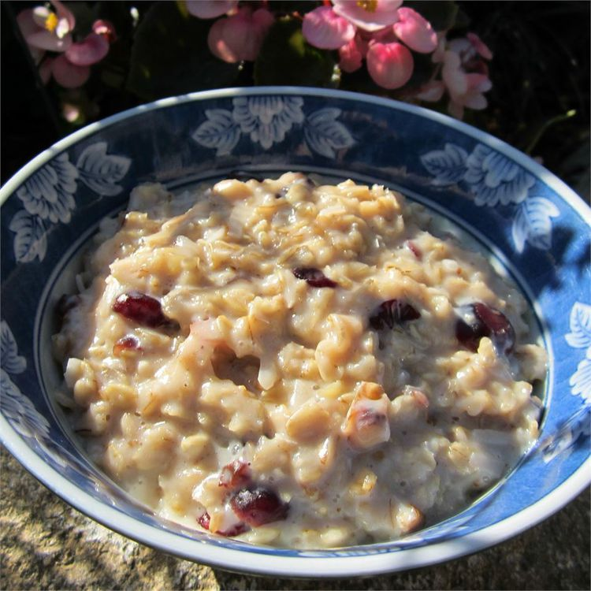

Healthy Coconut Oatmeal

Delicious and Healthy Coconut Oatmeal
A fast and healthy breakfast cereal or high-energy snack. Oatmeal made with coconut, raisins, cranberries, walnuts. Brown rice can be used in place of oatmeal.
Ingredients
Dough:
- 3 ½ cups plain or vanilla soy milk
- ¼ teaspoon salt
- 2 cups rolled oats
- ¼ cup pure maple syrup
- ⅓ cup raisins
- ⅓ cup dried cranberries
- ⅓ cup sweetened flaked coconut
- ⅓ cup chopped walnuts
- 1 (8 ounce) container plain yogurt (Optional)
- 3 tablespoons honey (Optional)
Directions
- Pour the milk and salt into a saucepan, and bring to a boil. Stir in the oats, maple syrup, raisins, and cranberries. Return to a boil, then reduce heat to medium. Cook for 5 minutes. Stir in walnuts and coconut, and let stand until it reaches your desired thickness. Spoon into serving bowls, and top with yogurt and honey, if desired.
- Enjoy!